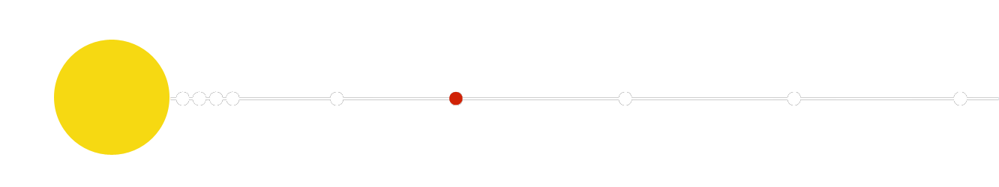
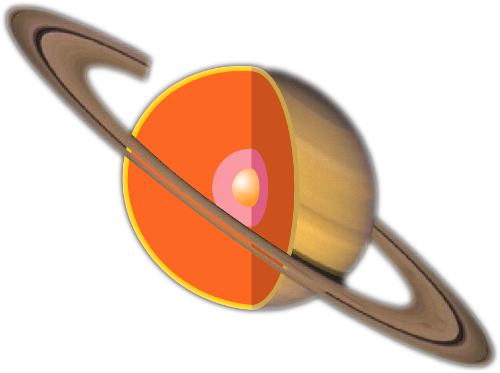

| HOMEPAGE | SISTEMA SOLARE | CORPI CELESTI | ||
| HOMEPAGE | SISTEMA SOLARE | CORPI CELESTI | ||
| paramentri orbitali | |
| semiasse maggiore |
1 426 725 413 km 9,53707032 UA |
| periodo orbitale |
29,45 anni (10 756,1995 giorni) |
| perdiodo sinodico | 378,10 giorni |
| Velocità orbitale |
9,137 km/s (min) 9,639 km/s (media) 10,183 km/s (max) |
| satelliti | 56 |
| anelli | 16 |
| dati fisici | |
| diametro equatoriale | 120 536 km | superficie | 4,27 x 1016 m2 |
| velocità di rotazione | 9 870 m/s |
| temperatura | 82 K (-218 °C) |
Grandi anelli
È il sesto pianeta del Sistema solare, in ordine di distanza dal Sole, e il secondo, dopo Giove, per dimensioni.
Ha 25 satelliti principali, e un sistema di 7 anelli che lo rende immediatamente riconoscibile. Come Giove, Urano e Nettuno, è un pianeta gassoso o gioviano. Rispetto alla Terra, ha un diametro di circa 10 volte più grande e un volume 700 volte superiore; a causa della bassa densità (la più bassa, in assoluto, tra i pianeti del Sistema solare) però, la sua massa è soltanto 95 volte quella del nostro pianeta.
Saturno orbita intorno al Sole ad una distanza media di circa 1.427 milioni di chilometri (la Terra dista dal Sole circa 150 milioni di chilometri), con una traiettoria eccentrica.
La velocità di rotazione del pianeta attorno al proprio asse è, dopo quella di Giove, la più elevata fra tutti quelli del Sistema solare, per cui Saturno compie un giro completo su se stesso in poco più di 10 ore. Al contrario, vista la grande distanza dal Sole, il suo periodo di rivoluzione è piuttosto lungo e corrisponde circa a 19 anni e mezzo.
La bassa densità fa sì che alla enorme differenza di volume, tra Saturno e la Terra, non corrisponda tra le rispettive masse una differenza altrettanto grande. La forza di gravità del pianeta risulta dunque paragonabile a quella terrestre (come su Urano e Nettuno) ed ha una intensità di poco superiore (circa il 7%) a quella del campo terrestre. Saturno è costituito (come Giove) prevalentemente da idrogeno ed elio, e presenta una struttura complessa, il cui materiale diventa progressivamente più denso procedendo verso la parte interna del pianeta; la suddivisione tra i diversi strati non è tuttavia ben definita.
Il nucleo è probabilmente di piccole dimensioni, denso e di natura rocciosa (ferro e silicati), con una composizione simile a quella della Terra. Qui la compressione gravitazionale del pianeta produce elevatissime pressioni e temperature che raggiungono i 12.000 °C. Il grande calore generato dal nucleo è causa delle correnti convettive negli strati fluidi più esterni.
Attorno a Saturno, orbitano numerosi satelliti di cui però solamente 25 hanno un diametro superiore ai 10 km (molti corpi minori si confondono addirittura con le particelle che compongono il suo sistema di anelli). I satelliti principali sono 18 e fra questi il più importante è Titano, le cui dimensioni sono superiori a quelle di Mercurio e Plutone. Tutti questi satelliti, ad eccezioni di Febe e Iperione, ruotano in modo sincrono rispetto a Saturno, ossia mostrando al pianeta sempre la stessa faccia, analogamente a ciò che avviene per la Luna rispetto alla Terra.
Saturno è fornito di un complesso sistema di sette anelli, molto più grandi, stabili e brillanti di quelli degli altri pianeti gioviani. Sono di colore chiaro, formati da polveri, piccole particelle rocciose e di ghiaccio, ognuna con una propria orbita e dimensioni che vanno da pochi centimetri a molti metri. I sette anelli appaiono dalla Terra continui e uniformi e vengono indicati con le prime sette lettere dell'alfabeto, tuttavia essi non sono perfettamente circolari, la densità delle particelle al loro interno varia in modo complesso e le diverse regioni non hanno confini netti: le divisioni e le separazioni misurano fino a 3.000 km.